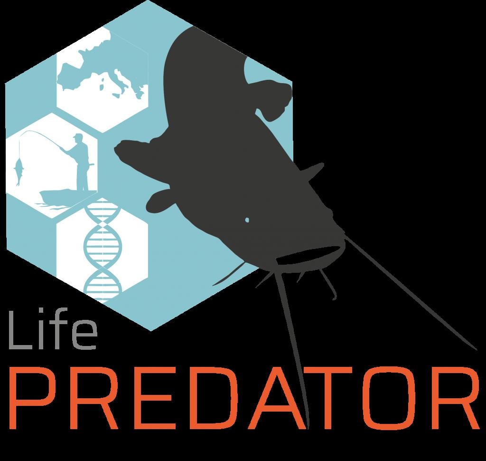
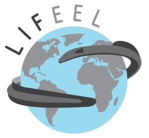
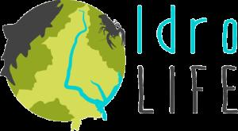
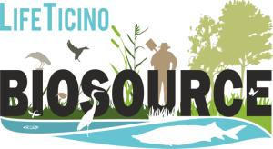
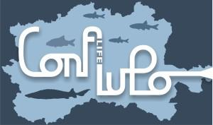

Attività · Programmi LIFE e ricerca europea
Programma LIFE
GRAIA vanta un’esperienza pluriennale nell’ambito del Programma LIFE, di seguito vengono elencati i progetti più recenti in cui GRAIA ha operato o tuttora opera in partenariato:
LIFE PREDATOR – LIFE21 NAT/IT/PREDATOR n. 101074458 – PREVENT, DETECT AND COMBAT THE SPREAD OF SILURUS GLANIS IN SOUTH EUROPEAN LAKES TO PROTECT BIODIVERSITY – Progetto in corso
LIFEEL – Life19 nat/it/000851 – Urgent measures in the Eastern Mediterranean for the long term conservation of endangered European eel (Anguilla anguilla) – Progetto in corso
IdroLIFE – Life15 nat/it/000823 – Conservation and management of freshwater fauna of EU interest within the ecological corridors of Verbano-Cusio-Ossola – Progetto concluso il 15 luglio 2021
LifeTicinoBiosource – Life15 nat/it/000989 – Enhancing Biodiversity by Restoring Source Areas for Priority and Other Species of Community Interest in Ticino Park – Progetto concluso il 31/07/2021
CON.FLU.PO – Life11 nat/it/188 – Restoring connectivity in Po river basin opening migratory route for Acipenser naccarii and 10 fish species in Annex II – Progetto concluso il 30/06/2018
Il nuovo Programma per l’ambiente e l’azione per il clima (LIFE 2021-2027)
La legislazione e le politiche dell’Unione europea in materia di ambiente e clima e quelle pertinenti in materia di energia hanno migliorato in modo sostanziale lo stato dell’ambiente. Restano tuttavia importanti sfide ambientali e climatiche che, se non affrontate, avranno notevoli conseguenze negative per l’Unione e il benessere dei suoi cittadini.Per rispondere alla crisi climatica ed aiutare a proteggere gli ecosistemi e la biodiversità, l’Unione europea ha lanciato diverse politiche ambiziose, una di queste è il Green Deal europeo, il principale strumento di riferimento per la promozione della transizione ecologica.La Comunicazione COM (2019) 640 della Commissione europea traccia la tabella di marcia delle politiche e delle misure principali di tale processo di transizione che saranno promosse nei prossimi anni per trasformare l’Europa in una società giusta e prospera, dotata di un’economia moderna, efficiente sotto il profilo delle risorse, circolare e competitiva, che nel 2050 non genererà emissioni nette di gas a effetto serra e in cui la crescita economica sarà dissociata dall’uso delle risorse. Aiuterà inoltre a proteggere e preservare la biodiversità valorizzando il capitale naturale dell’UE e proteggendo la salute e il benessere dei cittadini dai rischi e dagli impatti legati all’ambiente e al clima.Il nuovo programma LIFE perseguirà il raggiungimento degli obiettivi e dei traguardi stabiliti dalla legislazione e dalle politiche in materia di ambiente e clima e da quelle pertinenti in materia di energia, in particolare degli obiettivi del Green Deal europeo e svolgerà un ruolo cruciale nel sostenere la realizzazione degli obiettivi della Strategia dell’UE sulla biodiversità per il 2030, del nuovo Piano di azione per l’economia circolare, della nuova Strategia dell’UE di adattamento ai cambiamenti climatici e della Strategia “Un’ondata di ristrutturazioni per l’Europa” che faciliterà, quest’ultima, la transizione verso un’economia efficiente dal punto di vista energetico.




